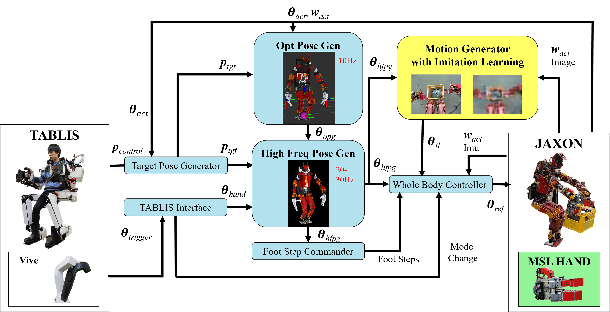

Development of a Whole-body Work Imitation Learning System by a Biped and Bi-armed Humanoid
- Yutaro Matsuura
- Kento Kawaharazuka
- Naoki Hiraoka
- Kunio Kojima
- Kei Okada
- Masayuki Inaba
- JSK Robotics Laboratory, The University of Tokyo, Japan
Imitation learning has been actively studied in recent years. In particular, skill acquisition by a robot with a fixed body, whose root link position and posture and camera angle of view do not change, has been realized in many cases. On the other hand, imitation of the behavior of robots with floating links, such as humanoid robots, is still a difficult task. In this study, we develop an imitation learning system using a biped robot with a floating link. There are two main problems in developing such a system. The first is a teleoperation device for humanoids, and the second is a control system that can withstand heavy workloads and long-term data collection. For the first point, we use the whole body control device TABLIS. It can control not only the arms but also the legs and can perform bilateral control with the robot. By connecting this TABLIS with the high-power humanoid robot JAXON, we construct a control system for imitation learning. For the second point, we will build a system that can collect long-term data based on posture optimization, and can simultaneously move the robot's limbs. We combine high-cycle posture generation with posture optimization methods, including whole-body joint torque minimization and contact force optimization. We designed an integrated system with the above two features to achieve various tasks through imitation learning. Finally, we demonstrate the effectiveness of this system by experiments of manipulating flexible fabrics such that not only the hands but also the head and waist move simultaneously, manipulating objects using legs characteristic of humanoids, and lifting heavy objects that require large forces.
Concept of Imitation Learning of Whole-body Tasks by Humanoid
System Overview
We propose the entire system from the operator and the control device TABLIS to the real robot JAXON with imitation learning.
Imitation Learning
Network structure and whole system of imitation learning
Flexible Cloth Manipulation
Experiment of removing cloth with proposed teleoperation system


Manipulating Objects with Foot
Experiment of operating a foot with proposed teleoperation system

Whole-body Heavy Object Manipulation
Experiment of lifting a heavy box with proposed teleoperation system
Bibtex
@inproceedings{matsuura2023tablisimitation,
title={Development of a Whole-body Work Imitation Learning System by a Biped and Bi-armed Humanoid},
author={Yutaro Matsuura and Kento Kawaharazuka and Naoki Hiraoka and Kunio Kojima and Kei Okada and Masayuki Inaba},
booktitle={IEEE/RSJ International Conference on Intelligent Robots and Systems (IROS)},
year={2023},
}
Contact
If you have any questions, please feel free to contact Kento Kawaharazuka.